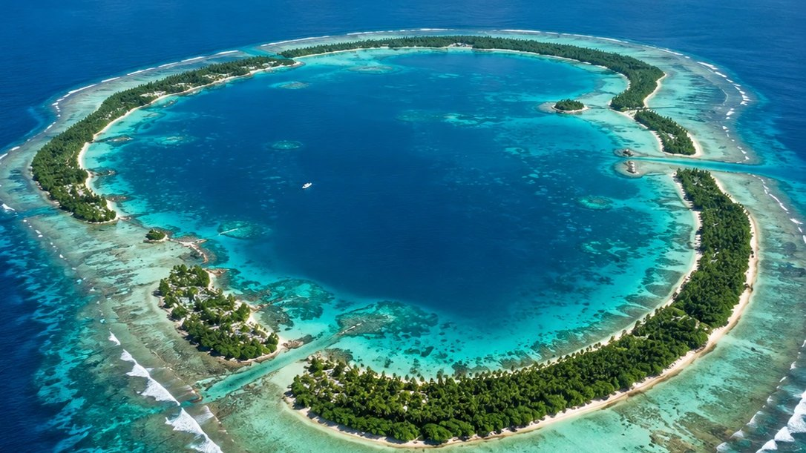

10 items

Outrigger Impact Fund I reaches a first close to finance blue economy projects across global Small Island Developing States
Cornerstone commitments from the Nordic Development Fund and the Luxembourg–European Investment Bank Climate Finance Platform. The fund is targeting a total size of US$100 million, with a final close anticipated in 2027.
Read the announcement-
Grant approved to ABALOBI for small-scale fisheries data tools
US$250,000 across the Maldives, Seychelles, Mauritius, Comoros and Cabo Verde.
-
Grant approved to Positive Change for Marine Life for community seaweed farming
US$250,000 in Western Province, Solomon Islands.
-
First grant awarded, to INVERSA for an invasive lionfish supply chain
US$250,000 in Belize, the facility’s first grant.
-
Grant approved to SarGas Limited for sargassum biodigestion
US$250,000 in Grenada.
-
The blue economy: a historic opportunity for SIDS
-
The blue economy: shoring up opportunities for island nations
-
Small Island Developing States need innovative forms of finance to bridge the devastating ‘adaptation gap’
-
Small islands are innovators for the ocean
-
UNCDF invites global leaders to join call and deliver private and blended finance for the ocean
Items marked OTAF record grants made by the Outrigger Technical Assistance Facility. A grant is not an investment, and is not a commitment by Outrigger Impact Fund I to invest. Items marked Research are third-party publications, listed for reference; Outrigger is not responsible for their content and does not endorse it.
Media enquiries
For interviews, comment or further information, write to the team.